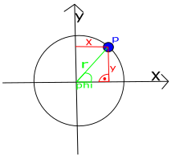
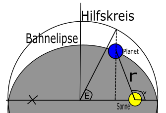
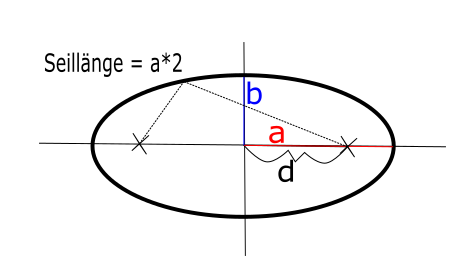

Für Venus, Erde und Neptun ist die Kreisbahn eine recht gute Näherung

Die Position eines Punktes P auf einer Kreisbahn kann man in kartesischen Koordinaten (x, y) aber auch in Polarkoordinaten angeben (r, φ("phi")) angeben, wo r der Radius und φ der Winkel zu x-Achse ist.
Es gilt: x = r*cos(φ) denn cos(φ) = x/r, außerdem gilt: y = r*sin(φ) denn sin(φ) = y/r
Auf einer Kreisbahn hat ein Planet eine konstante Winkelgeschwindigkeit: ω("omega") = φ/t, also φ = ω*t also gilt x = r*cos(ω t) und x = r*sin(ω t) mit ω = v/r = √(G*M/r)/r = √(G*M/r³), was man auch im Gravitationsgesetz sehen kann. kennt man die Umlaufzeit, dann verwendet man ω = 2π/T also x = r*cos(2π/T*t) und x = r*sin(2π/T*t). Hier kann man sich eine Excel Datei mit dem Beispiel der Erde herunterladen
Ellipsenbahnen:
Nach dem ersten Kepler-Gesetz bewegen sich die Planeten auf einer Ellipsenbahn um die Sonne. Die Position eines Planeten auf seiner Bahn wird wieder in Polarkoordinaten
r: Abstand zur Sonne (in Astronomischen Einheiten(1 AE = Abstand Erde - Sonne)) ν("ny"): wahre Anomalie
angegeben.

Es gilt r = a*(1-e*cos(E)) tan(ν/2) = √(1+e/1-e)*tan(E/2), oder umgeformt ν = arctan("Umkehrfunktion zu Tangens")((1+e/1-e)*tan(E/2)) mit a("schon vorher gegeben"): große Halbachse der Ellipse und e("schon vorher gegeben"): numerische Exzentrität ("legt die Bahnform fest")

e = d/a und 0 kleiner e kleiner 1 E = exzentrische Anomalie (im Bogenmaß angegeben) Die exzentrische Anomalie wird aus der Kepler-Gleichung: E-e*sin(E)=M ("in Bogenmaß") (das Problem an der Formel ist, dass sie nur von einem Computerprogramm ausgerechnet werden kann) mit Hilfe der Fixpunktiteration des Newtonverfahrens aus e und M berechnet. Die mittlere Anomalie wird in Abhängigkeit von der Zeit t berechnet: M = (2π/T)(t-to) mit T = Umlaufzeit des Planeten und to = Zeitpunkt des Periheldurchgangs